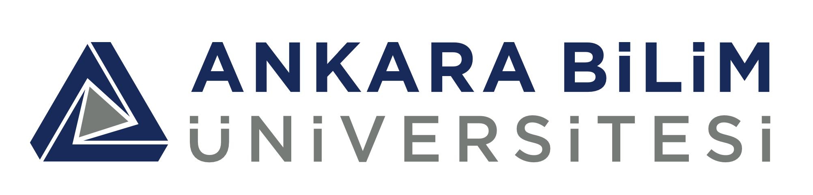

Ankara Bilim Üniversitesi (ABÜN), (İngilizce: Ankara Science University, ASUN), Türkiye'nin Ankara şehrinde bulunan bir vakıf üniversitedir. Türkiye Verimlilik Vakfı tarafından kurulmuş ve 17 Nisan 2020 tarih ve 31102 sayılı Resmi Gazete'de yayımlanarak fiili kuruluşunu tamamlamıştır.[1] 2021-22 eğitim-öğretim yılında 651 lisans, 57 yüksek lisans öğrencisi olarak toplamda 708 öğrenci öğrenim görmekteydi. 2022 yılı itibari ile üniversite kapsamında 6 profesör, 4 doçent, 48 doktor, 5 öğretim görevlisi ve 17 araştırma görevlisi olmak üzere toplam 80 akademik personel görev yapmaktaydı
